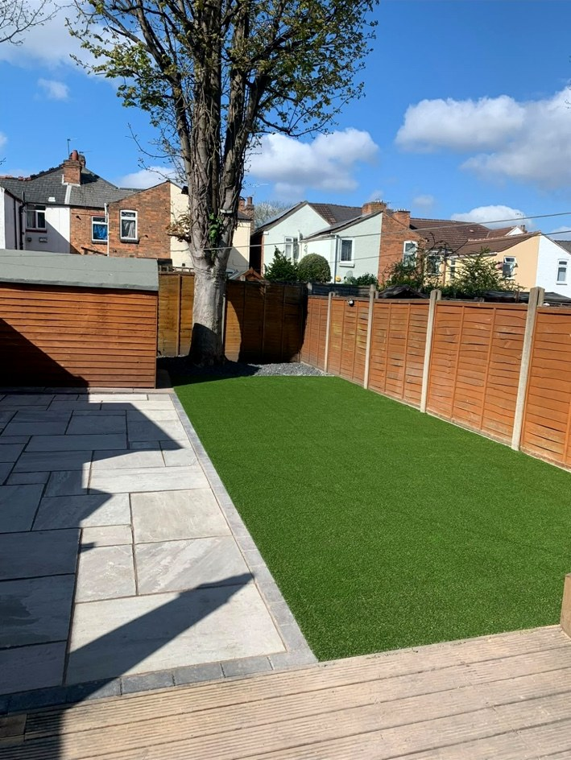
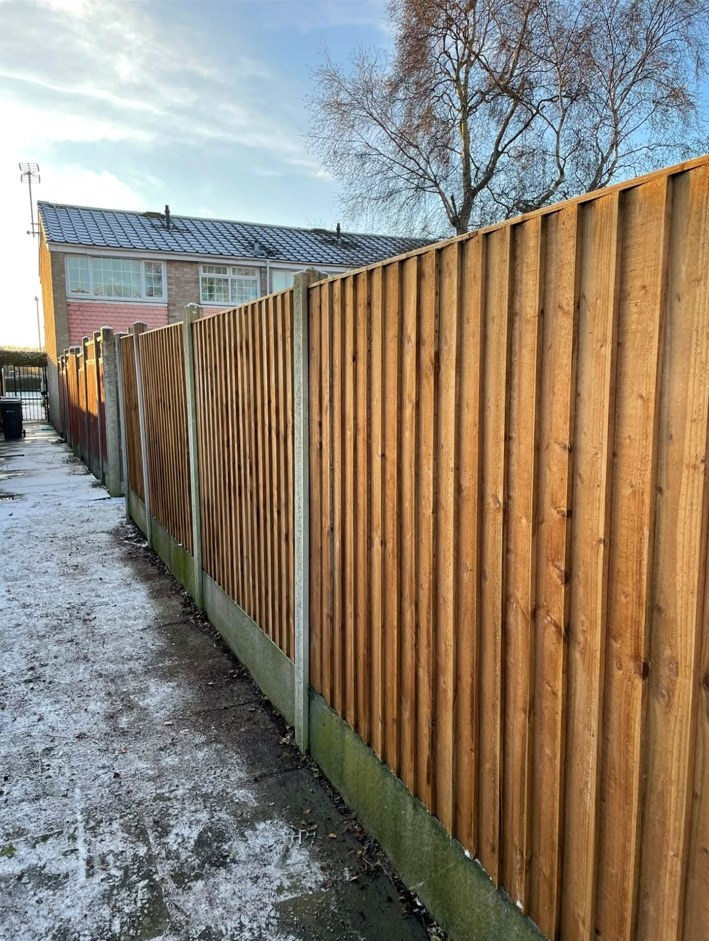
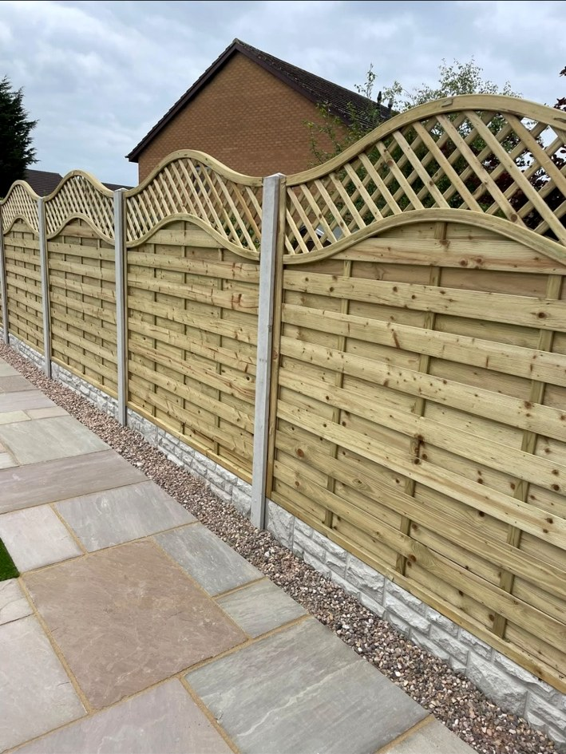

01 / LANDSCAPING
Garden landscaping
Bring your ideas to life with a practical, polished garden built around your space.
TALK ABOUT YOUR PROJECT ↗YOUR GARDEN. DONE PROPERLY.
Landscaping and fencing that transforms your outdoor space. Quality workmanship, clear advice and a finish you’ll be proud of.
WHAT WE DO
From a smart new fence to a complete garden makeover, we’ll help you make better use of your outdoor space.
Bring your ideas to life with a practical, polished garden built around your space.
TALK ABOUT YOUR PROJECT ↗Create the perfect spot to relax or entertain with clean lines and a quality finish.
TALK ABOUT YOUR PROJECT ↗Improve privacy, security and kerb appeal with fencing made to suit your garden.
TALK ABOUT YOUR PROJECT ↗Every garden is different. Tell us what you have in mind and we’ll provide a tailored, no-obligation quote.
THE FINISH SAYS IT ALL
Take a look at our real fencing, patios and landscaping work.





A TEAM YOU CAN TRUST
At Water Orton Landscaping & Fencing, we believe your garden should work for you. Whether you’re refreshing one corner or planning a complete transformation, we focus on good communication, dependable workmanship and a result that feels right for your home.
We’re happy to discuss projects of all sizes, help you explore ideas and provide a free quote before you commit.
WORD OF MOUTH MATTERS
Feedback from customers, as published on Checkatrade.
“Having previously used this company in the past I didn't think twice about using this company again. Kevin and the lads were very efficient, hardworkin…”
“What can I say, Kevin and his colleague (sorry I dont know his name) were fantastic. They removed our old garden gate and made a brand new one for us.…”
“The entire process was straightforward and job done in less than a week, from contacting, checking on site, quoting, booking the timing convenient for us and completing the job. Very happy with what was done, value for money and no rubbish left behind. I highly recommend Kevin and his team.”
“Excellent communication before and during work. Thorough hard work and careful attention in cold and wet weather.”
YOUR NEXT PROJECT STARTS HERE
Tell us a little about your garden project and we’ll be in touch to discuss the next step. No pressure, no obligation.
For a free quote, call us or use the form to prepare an email enquiry.
PROUD TO SERVE OUR COMMUNITY
Covering Water Orton, Coleshill, Castle Bromwich and surrounding areas. Contact us to check availability for your project.